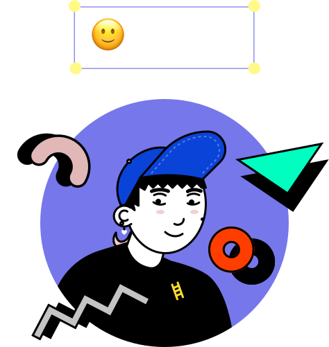

Depuis 15 ans j'audite des produits complexes et je forme les équipes à travailler autrement. En ce moment, avec l'IA.
Audit · Formation · 15 ans
Ce slider de volume disparaît quand on essaie de l'attraper. Zone de hover : 4px. Personne ne l'a signalé.
— App de streaming, 2024"Les utilisateurs ne lisent pas. Ils scannent, devinent, et abandonnent." — Ce que j'explique en formation depuis 10 ans
Un formulaire passe de 4 à 3 champs. Que se passe-t-il ?
Supprimer un seul champ peut doubler les conversions. La charge cognitive est sous-estimée à chaque réunion de spec.
Ce site est construit en direct avec l'IA. Process ouvert.
Ce que je vois au quotidien
Ce slider disparaît quand on essaie de l'attraper. Zone de hover : 4px.
— Observé sur une app de streaming
Votre mot de passe doit contenir
au moins 12 caractères.
Cette information apparaît après la soumission du formulaire. Pas avant.
— Formulaire d'inscription, banque en ligne
Essayez de cliquer sur ce bouton. Il se déplace. Quelqu'un a trouvé ça malin.
— Anti-pattern "confirmshaming"
Travaux
Des produits que personne ne voit
mais que tout le monde utilise.
Refonte onboarding — SaaS B2B
Audit de l'expérience d'activation. 3 points de friction identifiés. Taux de complétion +40% en 6 semaines.
Formation équipe produit — 12 personnes
Atelier sur les nouveaux process de travail avec l'IA. De la veille à la production. 2 jours, Paris.
Adramar — interface de gestion
Refonte d'un outil interne complexe. Architecture de l'information, design système, tests utilisateurs.
Ce site — construit avec l'IA
De la récupération du site piraté au déploiement, tout s'est fait en conversation avec Claude. Process documenté.